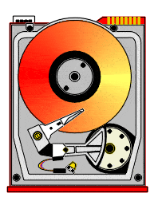

Los discos duros son dispositivos de almacenamiento electromecánicos utilizados en computadoras y otros dispositivos electrónicos para almacenar datos de forma permanente. Consisten en discos magnéticos recubiertos de material sensible a la magnetización y un brazo mecánico que lee y escribe datos en estos discos.

Platos magnéticos: Los discos duros consisten en varios platos magnéticos apilados uno encima del otro. Estos platos están recubiertos con un material sensible a la magnetización.
Cabezales de lectura/escritura: Cada plato tiene un cabezal de lectura/escritura que flota sobre su superficie mediante un cojinete de aire generado por la rotación del disco. Este cabezal es responsable de leer y escribir datos en la superficie del disco mediante cambios en la magnetización del material.
Brazo mecánico: Los cabezales de lectura/escritura están montados en un brazo mecánico que se mueve de forma rápida y precisa sobre la superficie de los discos para acceder a la ubicación deseada de los datos.
Motor de disco: Un motor de disco gira los platos a alta velocidad, generalmente entre 5,400 y 15,000 revoluciones por minuto (RPM), lo que permite un acceso rápido a los datos almacenados.
Capacidad: Los discos duros están disponibles en una amplia gama de capacidades, desde unos pocos gigabytes hasta varios terabytes o más, dependiendo del modelo.
Velocidad de rotación: La velocidad de rotación de un disco duro influye en su rendimiento. Los discos más rápidos tienen tiempos de acceso más cortos y tasas de transferencia de datos más altas.
Interfaz: Los discos duros se conectan a la placa madre de la computadora a través de diferentes interfaces, como SATA, SAS o PCIe.
Formato físico: Los discos duros están disponibles en diferentes formatos físicos, como discos de 3.5 pulgadas para computadoras de escritorio y discos de 2.5 pulgadas para computadoras portátiles.
Primera Generación (Década de 1950 - 1960): Los primeros discos duros fueron desarrollados por IBM y almacenaban datos en discos magnéticos recubiertos de óxido de hierro. Tenían capacidades muy limitadas, generalmente en el orden de varios megabytes.
Segunda Generación (Década de 1970 - 1980): Durante esta época, los discos duros se hicieron más comunes en las computadoras personales y se utilizaron para almacenar sistemas operativos y programas. Las capacidades aumentaron a varias decenas de megabytes.
Tercera Generación (Década de 1990): En esta época, los discos duros comenzaron a utilizarse en aplicaciones empresariales y servidores, lo que llevó a un aumento significativo en la capacidad y la velocidad de rotación. Los discos duros IDE y SCSI se volvieron populares.
Cuarta Generación (Década de 2000): Los discos duros se hicieron más asequibles y empezaron a integrarse en la mayoría de las computadoras personales. Se introdujeron interfaces más rápidas como SATA, lo que permitió velocidades de transferencia de datos más altas.
Quinta Generación (Década de 2010 - Presente): Los discos duros de estado sólido (SSD) ganaron popularidad debido a su mayor velocidad y durabilidad en comparación con los discos duros tradicionales. Los discos híbridos (HDD + SSD) también se volvieron comunes, combinando la capacidad de almacenamiento de los discos duros con la velocidad de los SSD.